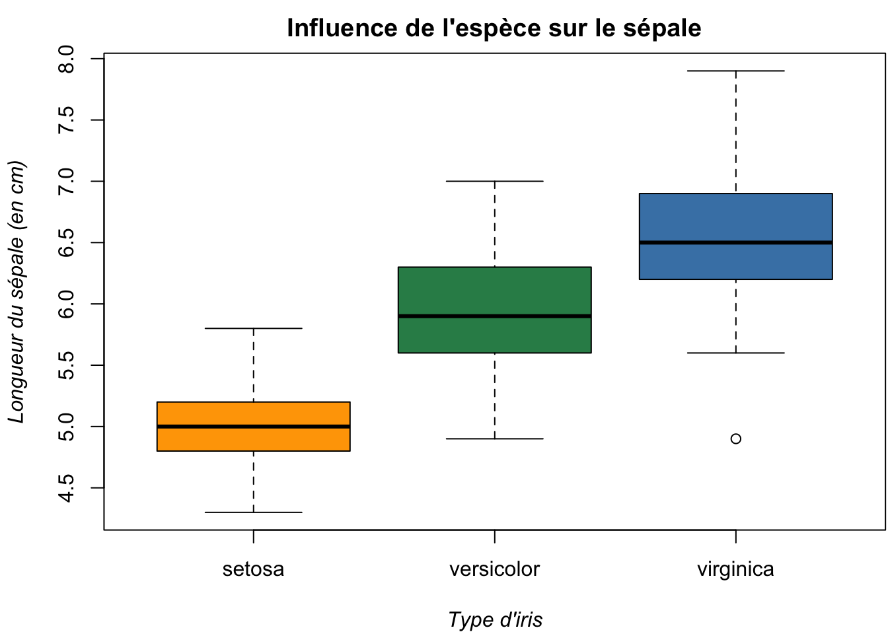

print('Hello world!')[1] "Hello world!"Dans ce cours d’introduction à R, nous aborderons les principes fondamentaux du langage de programmation R ainsi que ses applications dans l’analyse de données.
Le cours précédent a débuté par une présentation de l’environnement de développement RStudio. Ici, nous examinerons les concepts clés de la programmation en R, tels que les variables, les fonctions, les boucles et les conditions. Nous acquerrons également des compétences dans la manipulation des structures de données courantes telles que les vecteurs, les matrices et les data frames. De plus, nous traiterons des sujets tels que l’importation et l’exportation de données, ainsi que le nettoyage et la transformation des jeux de données.
Ce cours d’introduction fournit les bases nécessaires pour débuter la programmation en R.
Les cours à venir se concentreront sur une introduction aux techniques de visualisation de données à l’aide de graphiques de base, ainsi que sur l’utilisation de packages populaires tels que ggplot2.
Il y a deux types de commandes en R: les expressions et les affectations.
Expression
Affectations et expressions
Un objet peut être créé avec l’opérateur assigner qui s’écrit <-
ou de manière équivalente avec =
Si l’objet existe déjà, sa valeur précédente est effacée :
A l’aide de ; on peut taper deux commandes sur la même ligne avant leur exécution:
La fonction ls() permet d’afficher une liste simple des objets en mémoire, c’est-à-dire que seuls les noms des objets sont affichées.
Nous allons voir ici les différentes structures de données utilisées dans R, ainsi que les moyens de les créer et de les manipuler.
Dans R, tout est un objet. R manipule donc des objets qui sont caractérisés par leur nom, leur contenu mais aussi par des attributs qui vont spécifier le type de données représenté par un objet. Les objets ont tous deux attributs intrinsèques : le mode et la longueur.
mode. Les modes principaux sont:numeric : nombres réelscharacter: chaînes de caractèreslogical : valeurs logiques vrai/faux ( TRUE / FALSE ou T / F sur R)list: liste, collection d’objetsfunction: fonctionLes objets de mode numeric, character et logical, sont des objets simples qui peuvent contenir des données d’un seul type. Au contraire, les objets de mode list sont des objets spéciaux qui peuvent contenir des objets de types différents.
length. Un objet de mode character doit contenir plusieurs chaînes de caractères pour que sa longueur soit supérieure à 1. Un objet peut être de longueur 0 et doit alors être interprété comme un contenant qui existe mais qui est vide.[1] "character"[1] 1[1] 4[1] "function"x2 <- c("test1", "test2") # La fonction de concatenation c() permet de créer des vecteurs
length(x2)[1] 2[1] 5 5[1] "logical"[1] 1[1] "function"[1] "numeric"[1] 3[1] "character"[1] 3$Noms
[1] "Daniel" "Jeanne" "Romain"
$Age
[1] 33 28 33[1] "list"[1] 2[1] 3[1] "character"[1] "numeric"NULL
L’objet spécial NULL représente “rien” ou le vide. Son mode est NULL, sa longueur 0.
Dans les applications statistiques, il est souvent utile de pouvoir représenter des données manquantes.
NA
Dans R, l’objet spécial NA remplit ce rôle. NA signifiant : Not Allowed (valeur non allouée). Par défaut, le mode de NA est logical cependant NA n’est ni TRUE ni FALSE. Toute opération impliquant une donnée NA a comme résultat NA mais certaines fonctions (sum, mean,…) ont un argument na.rm qui, lorsque TRUE, élimine les données manquantes. La valeur NA n’est égale à aucune autre, pas même à elle même.
Par conséquent, pour tester si les éléments d’un objet sont NA ou non, il faut utiliser la fonction is.na.
Il existe différents types d’objets qui sont détaillés dans les sections suivantes. Les fonctions is.<type>() permettent de tester si l’objet en paramètre est du type demandé.
En R l’unité de base dans les calculs est le vecteur c’est-à-dire que tout est vector de base (au minimum). Il n’existe pas de type scalaire. Un scalaire est simplement un vecteur de longueur 1.
c commme concaténation :Les autres fonctions de base pour créer des vecteurs sont :
numeric (vecteur de mode numeric)character (vecteur de mode character)logical (vecteur de mode logical)Attention dans un vecteur simple, tous les éléments doivent avoir le même mode:
Il est également possible de donner une étiquette à chacun des éléments d’un vecteur.
L’indiçage dans un vecteur se fait avec les crochets [ ]. On peut extraire un élément d’un vecteur par sa position ou par son étiquette.
[1] 150[1] 150 155[1] 155 157On peut aussi utiliser un vecteur d’indiçage booléen, les éléments extraits sont bien évidement ceux correspondant aux valeurs TRUE. Par exemple pour extraire les prix supérieurs à 156 :
Une alternative est donnée par la fonction which()qui rend les indices dont les éléments vérifient une condition logique :
On peut utiliser l’indiçage pour changer un élément:
Il est possible d’extraire des éléments sur la base des étiquettes :
NULLmodel.1 model.2 model.3 model.4
0 162 155 157 model.3
155 En résumé, il existe quatre façons d’indicer un vecteur (matrice ou data frame) dans R :
numericPour créer des vecteurs de type numeric, d’autres commandes peuvent être utiles :
fonction :
: pour des suites d’entiers consécutifsPour générer le vecteur des \(n\) premiers entiers on utilise la syntaxe 1:n
fonction seq
seq pour des suites (plus générales) d’élémentsfonction rep
rep pour des éléments répétésLes matrices ne sont rien d’autre que des vecteurs dotés d’un attribut dimension de longueur 2 contenant les dimensions de la matrice. Tous les éléments d’une matrice ont donc le même mode. La fonction de base pour créer des matrices est matrix.
La fonction matrix remplit naturellement la matrice par colonnes. L’argument byrow permet d’inverser l’ordre de remplissage.
L’instruction dim donne les dimensions de la matrice : nombre de lignes et nombres de colonnes.
On utilise les [,] pour accéder aux éléments de la matrice, avec tout ce qui est pour les lignes avant la virgule, et pour les colonnes, après. On peut aussi ne donner que la position de l’élément dans le vecteur sous-jacent. Lorsqu’une dimension est omise dans les crochets, tous les éléments de cette dimension sont extraits.
[1] 2[1] 2[1] 1 2 3 4 5[1] 2 7 [,1] [,2] [,3] [,4]
[1,] 1 3 4 5
[2,] 6 8 9 10Des fonctions permettent de fusionner des matrices ayant au moins une dimension identique :
rbind : fusionne verticalement des matrices ayant le même nombre de colonnescbind : fusionne horizontalement des matrices ayant le même nombre de lignes. [,1] [,2] [,3] [,4] [,5] [,6] [,7] [,8] [,9] [,10]
[1,] 1 2 3 4 5 1 2 3 4 5
[2,] 6 7 8 9 10 6 7 8 9 10La généralisation d’une matrice à plus de deux dimensions est un tableau array. La fonction de base pour créer des tableaux est array.
Les opérations sur les vecteurs sont effectuées élément par élément :
[1] 5 6 3 8[1] 6 8 2 12[1] 9 16 1 36[1] 1.5 2.0 0.5 3.0[1] 1 1 1 1[1] 12 20 2 42 [,1] [,2] [,3] [,4] [,5]
[1,] 1.00000 1.414214 1.732051 2 2.236068
[2,] 2.44949 2.645751 2.828427 3 3.162278 [,1] [,2] [,3] [,4] [,5]
[1,] 1 4 9 16 25
[2,] 36 49 64 81 100Si les vecteurs impliqués dans une expression arithmétique ne sont pas de la même longueur, les plus courts sont récyclés de façon à correspondre au plus long vecteur.
Si la longueur du plus long vecteur est un multiple de celle du (ou des) autres vecteurs, ces derniers sont recyclés un nombre entier de fois. Sinon, le plus court vecteur est recyclé un nombre fractionnaire de fois mais comme ce résultat est rarement souhaité, un avertissement est affiché.
Le langage R compte un très grand nombre de fonctions internes permettant de :
[1] 1 2 3 4 5 6[1] 1 2 3[1] 8 9 10[1] 2 4 5 9 1[1] -1 2 4 6[1] 3 1 2 4[1] 2 3 1 4[1] 6 2 -1 4[1] 1 3 5[1] 4[1] 5[1] 3[1] TRUE FALSE FALSE TRUE [1] 1.2609623 2.4682853 8.7029881 1.7348370 0.3032269 3.3376511 1.1160957
[8] 6.0393577 9.2793153 5.1077534 [1] 1 2 9 2 0 3 1 6 9 5 [1] 1.261 2.468 8.703 1.735 0.303 3.338 1.116 6.039 9.279 5.108 [1] 1 2 8 1 0 3 1 6 9 5 [1] 2 3 9 2 1 4 2 7 10 6 [1] 1 2 8 1 0 3 1 6 9 5Puisque R est un langage orienté statistique, il dispose d’un type particulier permettant de coder des variables qualitatives, le type factor. Un facteur est un vecteur utilisé pour contenir une variable qualitative autrement dit c’est un vecteur avec une liste prédéfinie de valeurs que l’on appelle modalités, catégories ou niveaux (levels en R).
[1] paris lyon lyon paris nantes
Levels: lyon nantes paris[1] "factor"[1] "lyon" "nantes" "paris" Un facteur a le mode numeric : en effet ses éléments sont stockés comme les entiers énumérant les différentes modalités :
Comme nous pouvons le voir en transformant la variable en numeric, chaque modalité est codée numériquement (en valeur entière de 1 à \(n\), \(n\) désignant le nombre total de niveaux) et garde la liste des niveaux en plus.
La liste est le mode de stockage le plus général de R, permettant de mettre ensemble des éléments de différents types et mode, y compris list. Cela permet donc d’emboîter des listes. La fonction de base pour créer des listes est list().
[[1]]
[1] 1 2 3 4 5
[[2]]
[1] "Jan" "Feb" "Mar" "Apr" "May" "Jun" "Jul" "Aug" "Sep" "Oct" "Nov" "Dec"
[[3]]
[1] 3.141593La liste demeure un vecteur. On peut donc l’indicer avec [ ]. Cependant, cela retourne une liste contenant le ou les éléments indicés. C’est rarement ce que l’on souhaite. Pour indicer un élément d’une liste et n’obtenir que cet élément, il faut utiliser [[ ]]. On ne peut alors extraire qu’un seul élément à la fois.
Si les éléments d’une liste sont nommés par des étiquettes, on peut alors utiliser l’opérateur $ à la place de [[ ]].
La fonction convertit une liste en vecteur simple.
x1 x2 x3 x4
"1" "2" "3" "4"
x5 mois1 mois2 mois3
"5" "Jan" "Feb" "Mar"
mois4 mois5 mois6 mois7
"Apr" "May" "Jun" "Jul"
mois8 mois9 mois10 mois11
"Aug" "Sep" "Oct" "Nov"
mois12 pi
"Dec" "3.14159265358979" l = list(a = "chaîne",
b = 12,
c = 1:10,
d = month.abb,
e = list(x = 1:10, y = log(1:10)))
Find(is.vector, l)[1] "chaîne"$x
[1] 1 2 3 4 5 6 7 8 9 10
$y
[1] 0.0000000 0.6931472 1.0986123 1.3862944 1.6094379 1.7917595 1.9459101
[8] 2.0794415 2.1972246 2.3025851[1] 1$a
[1] "chaîne"
$b
[1] 12
$c
[1] 1 2 3 4 5 6 7 8 9 10
$d
[1] "Jan" "Feb" "Mar" "Apr" "May" "Jun" "Jul" "Aug" "Sep" "Oct" "Nov" "Dec"
$e
$e$x
[1] 1 2 3 4 5 6 7 8 9 10
$e$y
[1] 0.0000000 0.6931472 1.0986123 1.3862944 1.6094379 1.7917595 1.9459101
[8] 2.0794415 2.1972246 2.3025851La classe d’un objet spécifie son comportement et donc sa façon d’interagir avec les opérations et les fonctions. L’exemple probablement le plus important est le data frame: une liste spéciale dont les éléments ont tous la même longueur. En effet, même si les vecteurs, matrices et listes sont les types d’objet les plus fréquement utilisés sous R, un grand nombre de procédures statistiques reposent sur les data.frame pour le stockage des données. Bien que visuellement similaire à une matrice (représentation sous la forme d’un tableau à deux dimensions dont les colonnes sont ses éléments), un data.frame est plus général puisque les colonnes peuvent être de modes différents. Typiquement, dans un data frame les colonnes représentent les variables et les ligne les observations.
La commande de base pour créer un data.frame est data.frame() ou as.data.frame() pour convertir un autre type d’objets en data frame. L’élément distinctif entre un data frame et une liste générale, c’est que tous les éléments du premier doivent être de même longueur et que, par conséquent, R les dispose en colonnes.La classe d’un data frame est différente de celle des listes génériques et les data frame ont un système d’indiçage qui n’existe pas pour les autres listes.
id <- c('id.453', 'id.452', 'id.455', 'id.459', 'id.458', 'id.456', 'id.450', 'id.451')
age <- c(19, 45, 67, 53, 17, 30, 27, 35)
fumeur <- c(TRUE, FALSE, TRUE, TRUE, FALSE, TRUE, TRUE, TRUE)
sex <- c('f', 'f', 'h', 'h', 'f', 'h', 'f', 'f')
ma.bd <- data.frame(Id=id, Age=age, Fumeur=fumeur, Sex=sex); ma.bd Id Age Fumeur Sex
1 id.453 19 TRUE f
2 id.452 45 FALSE f
3 id.455 67 TRUE h
4 id.459 53 TRUE h
5 id.458 17 FALSE f
6 id.456 30 TRUE h
7 id.450 27 TRUE f
8 id.451 35 TRUE f[1] 8 4[1] 8[1] 4[1] "Id" "Age" "Fumeur" "Sex" Un data frame étant une liste, on pourra extraire une colonne à l’aide de l’opérateur $ précédé par le nom du data frame et suivi par le nom de la colonne (ou variable), ou utiliser l’opérateur []
[1] "f" "f" "h" "h" "f" "h" "f" "f"[1] 19 45 67 53 17 30 27 35[1] 45 17Les colonnes sont directement accessibles dans l’espace de travail (sans devoir taper le nom du data frame et le $) après avoir attaché le data frame. En effet, on peut travailler directement avec les colonnes d’un data frame en travailler sur leur noms à l’aide de la fonction attach(cela les rend visibles dans l’espace de travail). Il est possible d’annuler cela avec detach.
Pour afficher seulement les six premières lignes:
Id Age Fumeur Sex
1 id.453 19 TRUE f
2 id.452 45 FALSE f
3 id.455 67 TRUE h
4 id.459 53 TRUE h
5 id.458 17 FALSE f
6 id.456 30 TRUE hPour afficher seulement les six dernières lignes:
Id Age Fumeur Sex
3 id.455 67 TRUE h
4 id.459 53 TRUE h
5 id.458 17 FALSE f
6 id.456 30 TRUE h
7 id.450 27 TRUE f
8 id.451 35 TRUE fLes jeux de données contenus dans R sont (presque) toujours des data.frame.
'data.frame': 32 obs. of 11 variables:
$ mpg : num 21 21 22.8 21.4 18.7 18.1 14.3 24.4 22.8 19.2 ...
$ cyl : num 6 6 4 6 8 6 8 4 4 6 ...
$ disp: num 160 160 108 258 360 ...
$ hp : num 110 110 93 110 175 105 245 62 95 123 ...
$ drat: num 3.9 3.9 3.85 3.08 3.15 2.76 3.21 3.69 3.92 3.92 ...
$ wt : num 2.62 2.88 2.32 3.21 3.44 ...
$ qsec: num 16.5 17 18.6 19.4 17 ...
$ vs : num 0 0 1 1 0 1 0 1 1 1 ...
$ am : num 1 1 1 0 0 0 0 0 0 0 ...
$ gear: num 4 4 4 3 3 3 3 4 4 4 ...
$ carb: num 4 4 1 1 2 1 4 2 2 4 ...Vous pouvez utiliser la fonction View(mtcars) pour visualiser votre jeu de données.
mpg cyl disp hp drat wt qsec vs am gear carb
Mazda RX4 21 6 160 110 3.9 2.62 16.46 0 1 4 4 [1] 21.0 21.0 22.8 21.4 18.7 18.1 14.3 24.4 22.8 19.2 17.8 16.4 17.3 15.2 10.4
[16] 10.4 14.7 32.4 30.4 33.9 21.5 15.5 15.2 13.3 19.2 27.3 26.0 30.4 15.8 19.7
[31] 15.0 21.4 [1] 21.0 21.0 22.8 21.4 18.7 18.1 14.3 24.4 22.8 19.2 17.8 16.4 17.3 15.2 10.4
[16] 10.4 14.7 32.4 30.4 33.9 21.5 15.5 15.2 13.3 19.2 27.3 26.0 30.4 15.8 19.7
[31] 15.0 21.4'data.frame': 150 obs. of 5 variables:
$ Sepal.Length: num 5.1 4.9 4.7 4.6 5 5.4 4.6 5 4.4 4.9 ...
$ Sepal.Width : num 3.5 3 3.2 3.1 3.6 3.9 3.4 3.4 2.9 3.1 ...
$ Petal.Length: num 1.4 1.4 1.3 1.5 1.4 1.7 1.4 1.5 1.4 1.5 ...
$ Petal.Width : num 0.2 0.2 0.2 0.2 0.2 0.4 0.3 0.2 0.2 0.1 ...
$ Species : Factor w/ 3 levels "setosa","versicolor",..: 1 1 1 1 1 1 1 1 1 1 ...[1] "setosa" "versicolor" "virginica" [1] setosa setosa setosa setosa setosa
Levels: setosa versicolor virginica[1] 1 1 1 1 1[1] "setosa" "setosa" "setosa" "setosa" "setosa"Le plus souvent on travaille sur des jeux de données que l’on importe c’est-à-dire qui ne sont pas directement disponibles dans R.
L’importation des données est l’étape fondamentale de l’analyse de données. Pour charger dans l’espace de travail (c’est à dire dans la mémoire) les données stockées dans un fichier (de type: texte, .csv, excel, …) on utilise la fonction read.table() ayant de nombreux arguments! Cette dernière nous renvoie un data frame. Elle est le moyen principal pour lire des fichiers de données à l’aide de R.
Mais avant toute chose il faut connaitre le répertoire de travail ! En effet, si les données sont stockées (ou doivent être sauvegardées) localement, il est nécessaire de connaître (et de pouvoir modifier) le répertoire de travail:
[1] "/Users/romuanalyst/Documents/GitHub/Website"On rappelle que dans les machines Linux et OS, ~/ est un raccourci pour /Users/nom_utilisateur. Pour les machines Windows, la syntaxe des adresses est légèrement différente. Par exemple on utilise \ à la place de / .
Revenons à notre fonction read.table(). Ses trois arguments les plus importants sont:
file: nom (et adresse) du fichier, entre “guillemets”.
header: les variables sont nommées par défaut V1,…. La commande header (FALSE ou TRUE) indique si le fichier contient les noms des variables sur la première ligne et permet donc ainsi d’attribuer des noms aux variables.
sep: le séparateur de champ est le caractère séparant les colonnes . Il doit être défini suivant le fichier (sep=$\backslash$t pour la tabulation par exemple).
Fichier txt :
my_data_txt <- read.table(file="Fichiers/iris.txt",
header=TRUE, # la première ligne contient le nom des variables
sep='\t' # les variables sont separées par des tabulations
)
str(my_data_txt)'data.frame': 150 obs. of 5 variables:
$ Sepal.Length: num 5.1 4.9 4.7 4.6 5 5.4 4.6 5 4.4 4.9 ...
$ Sepal.Width : num 3.5 3 3.2 3.1 3.6 3.9 3.4 3.4 2.9 3.1 ...
$ Petal.Length: num 1.4 1.4 1.3 1.5 1.4 1.7 1.4 1.5 1.4 1.5 ...
$ Petal.Width : num 0.2 0.2 0.2 0.2 0.2 0.4 0.3 0.2 0.2 0.1 ...
$ Species : chr "setosa" "setosa" "setosa" "setosa" ...my_data_csv <- read.table(file="Fichiers/iris.csv",
header=TRUE, # la première ligne contient le nom des variables
sep=',' # les variables sont separées par des virgules
)
str(my_data_csv)'data.frame': 150 obs. of 5 variables:
$ sepal_length: num 5.1 4.9 4.7 4.6 5 5.4 4.6 5 4.4 4.9 ...
$ sepal_width : num 3.5 3 3.2 3.1 3.6 3.9 3.4 3.4 2.9 3.1 ...
$ petal_length: num 1.4 1.4 1.3 1.5 1.4 1.7 1.4 1.5 1.4 1.5 ...
$ petal_width : num 0.2 0.2 0.2 0.2 0.2 0.4 0.3 0.2 0.2 0.1 ...
$ species : chr "setosa" "setosa" "setosa" "setosa" ...Il existe (beaucoup) d’autres options dont les détails peuvent être trouvés dans l’aide.
Pour les données stockées dans le format .Rda ou .Rdata, l’importation se fait avec load() avec l’argument file= nom fichier. Si on veut charger des données directement à partir d’un url, ne pas oublier d’utiliser la fonction url() (cela n’était pas nécessaire dans read.table()):
L’exportation des données peut se faire dans un format de type texte (ou .csv, excel…) à l’aide de write.file() ou dans le format .rda ou .Rdata à l’aide de save(). Dans les deux cas, les deux principaux arguments sont x= données à sauvegarder et file= le nom du fichier (entre guillemets).
R markdownUn document R markdown (généralement enregistré avec l’extension .rmd ou .Rmd) permet d’une part d’utiliser la syntaxe markdown pour écrire du texte, mais aussi d’inclure des commandes R directement dans le document. Ainsi, un seul document contient le code et le commentaire, ce qui est un atout non négligeable pour des rapports ou présentations devant être mis à jour ou refaits régulièrement.
Il est possible d’inclure les commandes R soit dans un bloc de code, appelé chunk dans R Studio, ou en ligne, appelé inline chunk.
Pour créer un document R markdown dans R Studio, vous pouvez cliquer sur l’icône avec un plus, puis sur R markdown…. Vous devez voir apparaître une interface vous demandant de choisir entre un document, une présentation, une application Shiny ou de choisir un template prédéfini. Nous allons rester sur le document pour le moment. De plus, vous pouvez indiquer le titre et l’auteur, ainsi que choisir le format de sortie ( HTML , PDF ou Word ). Nous allons garder HTML pour le moment.
Lors de la création d’un nouveau document R markdown, vous devez voir apparaître en début de document une partie d’en-tête, comme ci-dessous, au format YAML.
---
title: "Titre"
author: "Romu"
date: "23/01/2023"
output: html_document
---Dans cet en-tête, nous pouvons donc définir le titre, éventuellement un sous-titre (avec subtitle:), le ou les auteurs, la date et des options de sortie. Pour le moment, nous allons garder la sortie au format HTML. Pour passer au format PDF, il faut écrire pdf_document dans output (ainsi qu’avoir \(\LaTeX\) installé sur sa machine - ce qui n’est pas le cas à l’IUT). Pour créer un document de type Word, il faut choisir word_document pour output.
Il y a d’autres possibilités de sortie, ainsi que la possibilité d’ajouter d’autres paramètres de sortie, que nous ne verrons pas ici.
Un chunk sera donc un bloc de commande R (ou autre langage possible) qui sera exécuté par R Studio. Pour cela, il faut indiquer sur la première ligne le langage utilisé. Pour R, voici donc un exemple simple
```{r}
# code R
summary(mtcars)
```Dans le document sera donc intégré à la fois le code, ainsi que le résultat de son exécution. L’exemple donnera donc
mpg cyl disp hp
Min. :10.40 Min. :4.000 Min. : 71.1 Min. : 52.0
1st Qu.:15.43 1st Qu.:4.000 1st Qu.:120.8 1st Qu.: 96.5
Median :19.20 Median :6.000 Median :196.3 Median :123.0
Mean :20.09 Mean :6.188 Mean :230.7 Mean :146.7
3rd Qu.:22.80 3rd Qu.:8.000 3rd Qu.:326.0 3rd Qu.:180.0
Max. :33.90 Max. :8.000 Max. :472.0 Max. :335.0
drat wt qsec vs
Min. :2.760 Min. :1.513 Min. :14.50 Min. :0.0000
1st Qu.:3.080 1st Qu.:2.581 1st Qu.:16.89 1st Qu.:0.0000
Median :3.695 Median :3.325 Median :17.71 Median :0.0000
Mean :3.597 Mean :3.217 Mean :17.85 Mean :0.4375
3rd Qu.:3.920 3rd Qu.:3.610 3rd Qu.:18.90 3rd Qu.:1.0000
Max. :4.930 Max. :5.424 Max. :22.90 Max. :1.0000
am gear carb
Min. :0.0000 Min. :3.000 Min. :1.000
1st Qu.:0.0000 1st Qu.:3.000 1st Qu.:2.000
Median :0.0000 Median :4.000 Median :2.000
Mean :0.4062 Mean :3.688 Mean :2.812
3rd Qu.:1.0000 3rd Qu.:4.000 3rd Qu.:4.000
Max. :1.0000 Max. :5.000 Max. :8.000 Il est possible de nommer le chunk en lui donnant un label (sans espace, sans accent) après r dans les {}. Ceci est intéressant surtout dans l’étape de développement, car si une erreur arrive lors de l’exécution, il sera plus facile de retrouver dans quel chunk est l’erreur (indiqué lors de l’affichage de l’erreur).
De plus, il est possible de mettre des options dans le chunk, toujours dans les {}, après une ",". Voici quelques options classiques et utiles (avec leur valeur par défaut indiquée, si elle existe) :
include = TRUE : si FALSE, le code est exécuté mais il n’est pas inclus dans le document (ni le code, ni son résultat)echo = TRUE : si FALSE, le code n’est pas affiché mais bien exécutéeval = TRUE : si FALSE, le code est affiché mais n’est pas exécutéresults = 'markup' : permet de définir comment le résultat est affiché (intéressant pour les tableaux, cf plus loin)fig.cap : titre du graphique produitIl est possible de mettre plusieurs options, toutes séparées par des ",".
Dans la suite, voici quelques exemples de chunks avec options. Regardez le source pour mieux comprendre le fonctionnement.
Tout d’abord, on importe les données iris.txt, mais ce genre de code n’est souvent pas à inclure, dans le sens où l’on ne veut ni l’afficher, ni voir de résultat.
Ensuite, la librairie knitr contient une fonction kable() permettant d’afficher un data.frame au format markdown. Cela permet d’avoir un résultat plus lisible qu’une sortie de console R classique.
| Sepal.Length | Sepal.Width | Petal.Length | Petal.Width | Species |
|---|---|---|---|---|
| 5.1 | 3.5 | 1.4 | 0.2 | setosa |
| 4.9 | 3.0 | 1.4 | 0.2 | setosa |
| 4.7 | 3.2 | 1.3 | 0.2 | setosa |
| 4.6 | 3.1 | 1.5 | 0.2 | setosa |
| 5.0 | 3.6 | 1.4 | 0.2 | setosa |
| 5.4 | 3.9 | 1.7 | 0.4 | setosa |
Enfin, on peut vouloir faire un graphique, ce qui pourrait donner ce qui suit. Pour ce genre de présentation, nous pouvons décider de ne pas afficher le code permettant de les obtenir.

On peut faire des chunks en ligne en encadrant le code avec des ` et en commencant le code par un r. Par exemple, on peut dire que dans le jeu de données Iris sont présentés 150 individus et 5 variables.
Il est possible de déterminer des paramètres globaux pour tous les blocs chunks du document (sauf paramètres locaux précisés). Ceci doit se faire comme suit, avec la fonction set() de l’objet opts_chunk de la librairie knitr. Il est par exemple possible de définir echo=FALSE pour n’avoir aucun code apparaissant dans le document.
knitr::opts_chunk$set(...)Dans votre document, penser à nommer chaque chunk différement. Et n’hésiter pas à commenter le document pour le rendre plus conforme à ce qu’on pourrait vouloir produire comme document.
Vous trouverez sur le site rmarkdown beaucoup d’informations et de compléments sur cette librairie. Beaucoup sont résumées dans ce document.
Les boucles doivent être utilisées avec parcimonie en R car elles sont généralement inefficaces et lentes à éxécuter. Dans la majeure partie des cas, il est possible de vectoriser les calculs pour éviter les boucles explicites. Il est également possible de créer ses propres fonctions. La meilleur façon de procéder étant d’utiliser les fonctions apply, sapply, tapply, mapply, lapply pour programmer de manière plus efficace.
if (condition) branche.vraie else branche.fausse : si condition est vraie, branche.vraie est exécutée, sinon ce sera branche.faussewhile (condition) expression : exécute expression tant que condition est vraiefor (variable in suite) expression : exécute expression successivement pour chaque valeur de variable contenue dans suiteOn définit une nouvelle fonction avec la syntaxe suivante : fun <- function(arguments) expression où
fun est le nom de la fonction
arguments est la liste des arguments, séparés par des virgules
expression constitue le corps de la fonction, soit une expression ou un groupe d’expressions réunies par des accolades.
La plupart des fonctions sont écrites dans le but de retourner un résultat. Ici, une fonction retourne tout simplement le résultat de la dernière expression du corps de la fonction. On peut utiliser la fonction return() pour retourner un résultat qui n’est pas à la dernière ligne de la fonction.
Exemple:
ma.fonction <- function(x,y=10){ # la valeur par défaut de y est 10
z=x-y
return(z)
}
ma.fonction(2)[1] -8[1] -2[1] 3Toute variable définie dans une fonction est locale et n’apparaît pas dans l’espace de travail: essayer d’exécuter
apply()La fonction apply() sert à appliquer une fonction quelconque sur une partie d’une matrice, ou plus généralement, d’un tableau. La syntaxe de la fonction est la suivante apply(X, MARGIN, FUN, ...) où
X est une matrice ou un tableau
MARGIN est un vecteur d’entiers contenant la (ou les) dimensions de la matrice ou tableau sur lesquelles la fonction doit s’appliquer
FUN est la fonction à appliquer.
Lorsque X est une matrice, apply sert principalement à calculer des sommaires par ligne (dimension 1) ou par colonne (dimension 2).
lapply() et sapply()Les fonctions lapply() et sapply() sont similaires à la fonction apply() puisqu’elles permettent d’appliquer une fonction aux éléments d’une structure (vecteur ou liste). Leur syntaxe est similaire lapply(X,FUN,...), sapply(X,FUNC,...).
La fonction lapply() applique une fonction FUN à tous les éléments d’un vecteur ou d’une liste X et retourne le résultat sous la forme d’une liste. La fonction sapply() est similaire, sauf que le résultat est retourné sous forme de vecteur, si possible. Le résultat est donc simplifié par rapport à celui de lapply().
[[1]]
[1] 10 6 2 1 5
[[2]]
[1] 7 5 1 8 6 3
[[3]]
[1] 3 10 9 5 2 6 8
[[4]]
[1] 1 10 2 4 9 7 5 3[[1]]
[1] 4.8
[[2]]
[1] 5
[[3]]
[1] 6.142857
[[4]]
[1] 5.125[1] 4.800000 5.000000 6.142857 5.125000Si le résultat de chaque application de la fonction est un vecteur et que les vecteurs sont tous de la même longueur, alors sapply retourne une matrice, remplie comme toujours par colonne :
On a souvent besoin d’utiliser une fonction spécifique dans les fonctions comme lapply() ou sapply(). On peut par exemple la définir au préalable et l’utiliser comme une autre.
l = list(a = "chaîne",
b = 12,
c = 1:10,
d = head(mtcars),
e = list(x = 1:10, y = log(1:10)))
infoElement <- function(e) {
return(c(classe = class(e), longueur = length(e)))
}
sapply(l, infoElement) a b c d e
classe "character" "numeric" "integer" "data.frame" "list"
longueur "1" "1" "10" "11" "2" Il est également possible de déclarer directement la fonction dans les fonctions lapply() et sapply(). On parle alors de fonction anonyme.